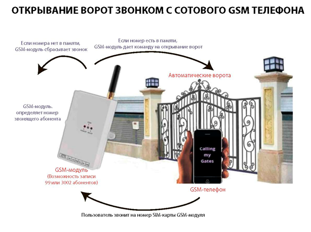
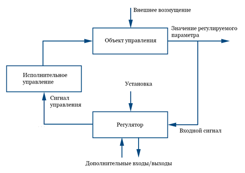
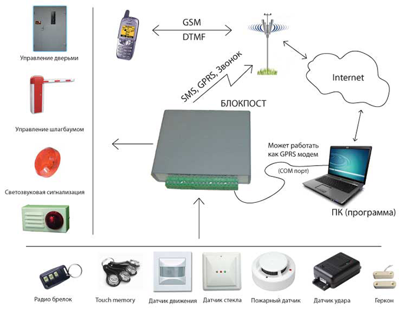

В основе применения GSM приложенийчаще всего используетсяGSM-модуль, позволяющий управлять дистанционно любой автоматикой, принимая сигнал с телефона, работающего в диапазоне GSM, и осуществляя включение/выключение подсоединенной аппаратуры. Применяется он для открытия распашных и откатных ворот, шлагбаума на паркингах, автостоянках, в дачных и гаражных кооперативах, частных домах, удаленного управления инженерными системами полива, освещения, отопления, перезагрузки серверов и роутеров и т.д [22].
Наиболее широкое распространение GSM-модуль получил как надежный и бюджетный контроллер для управления групповым доступом на объект, совместимый с популярной автоматикой ворот и шлагбаумов Doorhan и Came.
Как работает модуль.По сути GSM-модуль — это радиоприемник с установленной sim картой любого оператора сотовой связи и контроллер для обработки поступающей и исходящей информации. В базу данных модуля заносятся телефонные номера всех пользователей, имеющих право доступа на закрытую территорию. Современные модели поддерживают запись и хранение до 2000 номеров, более дорогие модификации способны обрабатывать до 10000 номеров.
Принцип работы устройства показан на рис.6.1.
Рис.6.1. Принцип работы устройства открывание ворот
{kind=link}
Принципиальная схема работы устройства. При осуществлении звонка контроллер производит сверку входящего номера с записанными данными, и при его наличии в памяти подается команда на осуществление открытия и приведение в действие привода шлагбаума и откатных ворот. Если номера в списке нет, то устройство просто сбрасывает звонок, не производя больше никаких действий. Подобным же образом контроллер открывает распашные ворота, оборудованные электрозамком и приводом Doorhan или Came.
Соединения со звонящим абонентом не происходит, либо оно обрывается через несколько секунд, благодаря чему расходы на оплату услуг сотовой связи равны нулю. Если данные не совпадают, то пропуск через ограждающее устройство не предоставляется. В некоторых моделях существует возможность отключения идентификации, и пропуск осуществляется при любом входящем звонке на контроллер. Настройка блока управления GSM-модулем выполняется с помощью смс-команд, веб-интерфейса, программы на компьютере, подключенному через USB-порт, android-приложения для смартфонов.
Следующим примером является автоматическая дистанционная GSM-система управления отоплением. Дистанционное автоматическое управление системой отопления загородного дома может быть частью общей автоматизации инженерных систем, охраны, противопожарной безопасности, известной под названием «Умный дом», или работать самостоятельно, обеспечивая заданный уровень комфорта к приезду хозяев. Использование GSM-модулей позволяет запускать и контролировать автоматические процессы с помощью установленного на сотовый телефон мобильного приложения.
Принцип действия GSM-системы. Если пользоваться домом от случая к случаю, то отопление может работать в следующих режимах:
ручное управление — приехал, включил, дождался прогрева дома, выключил, уехал— низкий уровень комфорта, риск замерзания трубопроводов;
автоматическое поддержание «холостого» или «рабочего» температурного режима — высокие затраты на отопление, риск возникновения пожара;
включение и поддержание температурного режима с удалённого источника — в случае приезда или в аварийной ситуации (возгорание, промерзание трубопроводов) — высокий уровень комфорта и безопасности, низкие затраты на энергоносители.
Последний вариант представляется самым оптимальным, хотя и требует предварительной адаптации системы отопления (в том числе и котла) и приобретения, собственно, самого модуля.
Принцип действия системы состоит из внешнего воздействия на GSM-устройство, которое подает команды на включение системы отопления в заданном режиме. Принципиальная схема GSM-управления приведена на рис.6.2.

Рис.6.2. Принципиальная схема GSM-управления
Включается котёл, запускается работа климатических и системных датчиков, передающих информацию на контроллеры, которые её анализируют и выдают команды исполнительным механизмам:
открытие, закрытие, регулирование трубопроводной арматуры;
увеличение, снижение мощности или отключение котла;
блокировка вышедших из строя элементов.
В свою очередь, система передает данные GSM-модулю, который посылает сообщения в виде SMS на командное устройство (мобильный телефон, планшет и т.д.): информацию о температуре в помещении, о температуре теплоносителя, о нештатных ситуациях. Причем получение сообщений зависит от возможностей и заданных настроек.
Рассмотрим также GSM сигнализацию, её функциональные возможности и преимущества. Охрана домов, дач, квартир и гаражей является достаточно сложной задачей, для эффективного решения которой возникает потребность в применении различных защитных систем. Наиболее эффективным охранным комплексом, отличающимся широкими функциональными возможностями и высоким уровнем безопасности, является GSM сигнализация (рис.6.3).

Рис.6.3. Охранный комплекс с GSM сигнализацией
Эта инновационная разработка обеспечивает одновременный контроль объекта и мгновенную подачу предупредительных сигналов владельцу и соответствующим службам при возникновении ситуаций проникновения и взлома. Отличительной чертой таких систем является то, что кроме защиты от воров и злоумышленников, такого рода охранные комплексы позволяют следить за безопасностью на объекте в целом, предохраняя его от возможного пожара, затопления водой или от утечки газа.
Важным является также и то, что для передачи сигналов об опасности используются высокочастотные каналы сотовой связи, а не проводные магистрали, которые могут легко повредить злоумышленники.
ДЖСМ сигнализация представляет собой электронную систему, которая включает в свой состав несколько функциональных модулей. Они обеспечивают непрерывный контроль ситуации на объекте (движение, взлом, повышение температуры, задымленность, утечка газа/воды), срабатывают при возникновении одной или нескольких внештатных ситуаций и передают соответствующий сигнал тревоги на мобильные устройства владельца либо совершают дозвон на запрограммированные стационарные номера.
В качестве устройств, с помощью которых контролируется состояние объекта, используются специальные датчики и чувствительные сенсоры.Они могут быть проводными или беспроводными в зависимости от чего их связь с центральным электронным блоком поддерживается за счет радиоканала или проводной магистрали.
Центральный электронный модуль представляет собой микропроцессорное устройство, с помощью которого настраивается охранная сигнализация GSM, обрабатываются сигналы от датчиков и приводятся в действие исполнительные системы в виде светозвуковой сигнализации.
В состав центрального электронного блока входит ключевой элемент такого рода сигнализаций – GSM адаптер. Он представляет собой модуль сотовой связи, который поддерживает установку одной или двух SIM-карт и программирование мобильных и стационарных номеров, на которые можно будет вести рассылку предупредительных сигналов и совершать дозвон в случае возникновения взлома или внештатной ситуации.
Еще одним немаловажным элементом, благодаря которому охранная система GSM функционирует непрерывно, является система питания. Преимущественное большинство сигнализаций владеют двумя системами – стационарной и автономной. Первая из них обеспечивает питание от сети 220 В, а вторая работает от встроенного аккумулятора.
Применение резервной автономной системы позволяет поддерживать работоспособность охраны даже в случае аварийного отключения основной сети или ее преднамеренного повреждения злоумышленниками.
Отличительной чертой, которой владеют охранные электронные комплексы, является поддержка широкого спектра различных датчиков. ЖСМ сигнализация может работать со следующими устройствами:
миниатюрные видеокамеры;
акустические датчики;
термочувствительные сенсоры;
датчики изменения объема и массы;
пожарные датчики;
мультифункциональные сенсоры, реагирующие на утечку воды, газа,
появление дыма.
Если на объекте планируется GSM охрана, GSM сигнализация с различными функциональными датчиками будет оптимальным вариантом.
Наличие перечисленных устройств позволит реализовать многофункциональную систему охраны дома или квартиры от непрошенных гостей и от различных аварийных ситуаций.
Охранные системыGSM сигнализация в процессе своей работы поддерживает:
оперативное оповещение владельцев с помощью SMS или MMS сообщений;
дозвон на внесенные в память мобильные/стационарные телефонные номера;
связь с владельцем охраняемого объекта, диспетчером или полицией/охранной компанией;
ведение видеонаблюдения или звуковой записи по периметру объекта;
функционирования факторов психологического сдерживания злоумышленника в виде звуковой сирены и световой сигнализации;
работу исполнительных систем и механизмов, которые обеспечивают пожаротушение, удаление дыма из помещений, перекрытие подачи газа/воды или электричества;
возможность постановки и снятия с охраны с помощью звонка, SMS-сообщения или DTMF-команды;
использование системы, препятствующей блокированию злоумышленниками
передачи сигнала тревоги через радиоканал.
Преимущества сотовых сигнализаций.GSM охрана по сравнению с иными системами безопасности владеет целым рядом преимуществ, среди которых:
поддержка отправки сигнала тревоги сразу на несколько запрограммированных номеров;
возможность совершения дозвона как на мобильные номера, так и на стационарные телефоны;
оповещение о тревоге различными способами – звонок, SMS/MMS сообщение, звуковое/видеовещение с объекта, звуковая/световая сигнализация;
высокий уровень защищенности от взлома и блокирования работы такого рода сигнализаций;
возможность работы от автономных источников питания;
автоматический контроль степени зарядки батареи и наличия денег на SIM-карте;
возможность использования нескольких SIM-карт разных операторов мобильной связи;
одна система GSM имеет возможность параллельного контроля нескольких объектов;
поддержка обратной связи с мобильными устройствами владельца (пульт,мобильный телефон, планшет, смартфон и пр.).
К недостаткам сотовых сигнализацийGSM относятся:
зависимость от качества сотовой связи;
для максимальной эффективности работы сигнализации потребуются услуги диспетчера;
достаточно высокая стоимость.
Система охранной GSM сигнализации выбирается по следующим критериям:
Подбираются датчики по типу подключения и функциональности. По способу подключения датчики могут быть беспроводными или проводными. Второй вариант стоит дешевле, но предусматривает дополнительные работы по прокладке коммутационных проводников от датчика к центральному электронному блоку.
Важно чтобы GSM сигнализация поддерживала работу с несколькими операторами связи. Это исключит ее простой при отсутствии сигнала связи у одного из операторов.
Если требуется мультифункциональная система безопасности объекта важно выбирать комплексы охраны, которые поддерживают широкий спектр различных датчиков.
Чтобы исключить блокирование передачи сигнал тревоги с помощью специальных электронных приспособлений, важно чтобы системы GSM сигнализации поддерживали технологию защиты сигналов от глушения извне.
При выборе охранных систем нужно обратить внимание на наличие автономной системы питания и продолжительности работы устройств от нее. Независимый источник питания позволит исключить ситуации, когда охранные системы GSM сигнализации пребывают в неработоспособном состоянии.
В заключении рассмотрим, как построить «Умный Дом» своими руками. Умный Дом - это доступно, это просто, это нужно, без этого уже нельзя жить. Современная квартира, а тем более дом, коттедж, дача, офис - это сложный набор различных систем и коммуникаций - источников возможной опасности пожара, взрыва, затопления.Кроме того, это многочисленные окна и двери - места возможного нежелательного проникновения в Ваши владения и научить свой дом уму-разуму, можно своими руками без посторонней помощи.
Прежде всего, стоит осознать, что интеллектуальный дом - это централизованная система контроля и управления отдельными элементами, установленными по всему дому. В целом данные элементы можно разделить на несколько групп:
Элементы охраны.
Элементы пожарной безопасности.
Устройства для контроля водоснабжения и газа.
Элементы домашней автоматики.
Для того, чтобы самому собрать "Умный дом" нужно пройти несколько этапов:
1 этап. Постановка проблемы.
Прежде всего, необходимо определиться "Что должна уметь система?". Если устанавливается "Умный дом" ради престижа, то тогда не стоит тратить время на изучение всех тонкостей. Лучше сразу обратиться к профессионалам премиум-класса за баснословную сумму. Однако если решаетесь на самостоятельную сборку системы, следует четко сформулировать проблему. Например, "Желательно получать SMS-сообщения о несанкционированном проникновении в мой дом", что позволяет сузить круг оборудования, отпадают всевозможные датчики утечки дыма/газа, модуль домашней автоматики и т.д.
2 этап. Получение консультации технического специалиста.
Прежде чем начать поиск соответствующих элементов, необходимо связаться с техническим специалистом. Технический специалист, найти которого можно через Интернет-сайт компании, предоставляющей подобные услуги, расскажет, какие именно элементы необходимо для выполнения тех или иных функций. Таким образом, сложится представление о примерной стоимости решения запланированной проблемы, а также о необходимых элементах, и круг оборудования станет еще уже.
3 этап. Выбор производителя.
Выбор производителя - одно из самых сложных и кропотливых занятий, которое у неподготовленного человека займет уйму времени.
Системы различных производителей имеют свои отличительные черты, особенности и нюансы. Например, если один производитель предлагает встроенный GSM-модуль (Модуль для управления системой с мобильного телефона), то другой предлагает его отдельно и так далее. Поэтому для дальнейшего сбора "Умного дома" нужно определиться с производителем. Для самостоятельной сборки "Умного дома" необходимо выбрать одного производителя (!). Нельзя взять датчик Jablotron, контрольную панель Electronics Line, пульт управления Siemens. Теоретически совмещать оборудование различных производителей можно, но мы не рекомендуем делать это без практической помощи технического специалиста. Таким образом, цель при поиске - выбрать одного производителя. В Интернете можно найти сайты производителей и подробно изучить системы и элементы каждого. Позвонив впроизводителюможно узнать нюансы и особенности каждой системы.
4 этап. Поиск необходимых элементов и оформление заказа.
В результате трех пройденных этапов, должны иметь четкое представление о том, как должна выглядеть система и из каких элементов она будет состоять. Рекомендуется расписать состав системы на листке бумаги, так будет проще сориентироваться в море выплывающих нюансов. Необходимо также указать количество устройств исходя из количества комнат в жилище. Теперь главное - собрать эти элементы в одну корзину. Для примера возьмем стандартный вариант против проникновения:
Решение против проникновения с оповещением по SMS для одной комнаты.
Состав системы:
Контрольная панель с GSM-модулем и встроенной клавиатурой ("Мозг" всей системы, по радиоканалу принимает информацию от датчиков и других устройств, находящихся в доме, и команды, поступающие непосредственно от владельца системы) - 1 шт.
Магнитоконтакт (устройство,фиксирующее открытие/закрытие входной двери.
Датчик движения - 1 шт. (Инфракрасный детектор)
Брелок - 2 шт. (В семье будет два пользователя системой)
Следует обратить внимание на то, что один и тот же производитель может предлагать различные варианты одного и того же датчика. Самым распространенным вариантом является датчик движения (бывают датчик-шторка, датчик, не реагирующий на животных, и т.д.). Уточните состав системы, найдите Интернет-магазин, предлагающий данные элементы и оформите заказ.
5 этап. Выбор тарифа и мобильного оператора.
После приобретения всех необходимых элементоврекомендуется изучать все инструкции, и подробно ознакомиться с существующими на момент покупки тарифами мобильных операторов. При этом особое внимание следует обратить на:
Стоимость исходящего SMS-сообщения;
Стоимость исходящего звонка;
Стоимость междугороднего/международного звонка.
Рекомендуем установить sim-карту выбранного оператора.
В Интернете есть сайты, предлагающие сводные таблицы с тарифами, подходящими для использования в подобных системах.
6 этап. Программирование, установка и тестирование системы.
Три больших шага - программирование, установка и тестирование системы объединяем в один, так как все эти действия сводятся к изучению инструкции по инсталляции системы. Внимательно прочитайте инструкцию и в случае возникших проблем обратитесь за помощью к техническому специалисту.
Как видно, Умный дом можно собрать самостоятельно, но следует помнить, что подробное изучение работы системы займет не один день и много нервов. К сожалению, в Интернете не так много специалистов готовых и способных подробно расписать особенности каждой системы человеку со стороны. Да и с наличием необходимых элементов у многих проблемы. Поэтому, будет не лишнем подумать о "запасном" варианте и начать поиск грамотных специалистов.